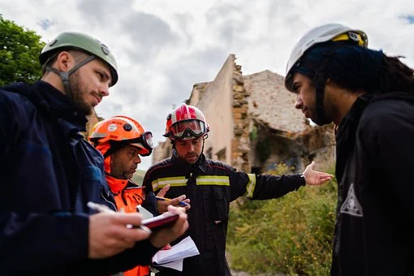

Civil Engineering comprises a variety of activities relating to arranging, keeping up with, redesigning constructions like structures, tunnels, water streams, bridges, roads, and so on. Students who have effectively finished masters in Civil Engineering in Germany play a significant part in creating metro urban areas to accommodate the expanding population, arranging the framework for urban regions, giving liable solutions for supply and waste management of urban areas, planning proficient vehicle courses to make the simple flow of traffic, and so on.
Civil Engineers primarily focus on the supportable utilization of assets and their conservation and effective use of energy. They play a crucial part in arranging the development of a project utilizing measurements and the site’s development with the inventory of building material. Experts who have effectively pursued Civil Engineering in Germany need to do investigate for adjusting methodologies in framework, creating and advancing structure materials, enhancing the energy proficiency of structures, testing of safety concerns, evaluating climate supportability, working out benefits, and so forth. The main subjects for the who study Civil Engineering in Germany comprise of different subjects which are as per the following: foundations of math, physics, and some specific subjects of Civil Engineering. Aside from this, the educational program additionally considers, the natural, financial, and lawful system. The information on these different subjects makes them able in the fields of building activities, geo-innovation, development designing, transportation, spatial preparation, water the board, and so on Civil Engineers are additionally experts in the administration of difficult projects. Environment conservation guidelines have made crafted by a civil engineer specialist extreme and requesting. There is an immense interest for those students who concentrate on civil engineering in Germany in the job market of Europe. With an expert in civil engineering in Germany, one can positively make his/her future brilliant.